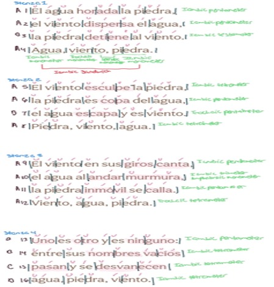

Translation, or “the process of changing something that is written or spoken into another language.” (Oxford Learner’s Dictionary), has been practiced for as long as communities of different languages and cultures have interacted with one another. It is a powerful tool that can be used to foster good relations and prosperous nations, or it can be used as a tool for colonization and imperialism. For this reason, the definition of translation is woefully simplistic. It does not encapsulate the depth at which translation can affect the world and the power that it holds. Translation is not just a quick change from one grouping of words to another, it is active work, it is an art form, it is bending and twisting the words of another language into another, while sometimes trying to maintain the original message of the work and other times molding the message to fit an agenda.
In the 2022 novel Babel, by R. F Kuang, the beauty and violence of translation are explored. The main character, Robin Swift, a Cantonese immigrant living in London and attending Oxford for translation, struggles between seeing how intricate translation is and how violent and demeaning it can be to an original text and a culture in general. Two quotes from this novel truly showcase the dichotomy of what it is to translate:
“Betrayal. Translation means doing violence upon the original, means warping and distorting it for foreign, unintended eyes. So then where does that leave us? How can we conclude, except by acknowledging that an act of translation is then necessarily always an act of betrayal?” (Kuang).
This quote demonstrates the side of translation that stems from its historic use as a means of subjugation. Oftentimes, in the 18th and 19th centuries, English scholars would consult scholars from different countries, such as China and India to translate foreign literature for them, but their intentions were not pure, in fact, they were quite malicious. They used those translations to prove European superiority which often left the translators feeling as if they were betraying their people by sharing their language and culture. But, in the case of India, they had no choice but to adhere to the request of the Europeans because they were a British colony at the time.
The European superiority complex is partially why China, in the 19th Century (Mair), imposed laws that banned teaching foreigners Chinese. Europeans were stealing and rebranding so much of Chinese culture that the Chinese Imperial government decided to put a stop to it by banning the teaching of Chinese to foreigners. It became a criminal offense.
Now, this is not to say that China had completely pure intentions in creating these laws. The other side to this ban was that the Chinese Imperial government also had a superiority complex against Europeans, especially the British, and wanted to keep them from learning more about their culture than they already had. They also didn’t want Christian missionaries spreading
Chinese translated Bibles to Chinese citizens because Christianity was not the dominant religion of China, it was Confucianism. So, the banning of translation in China was equal parts protection of their culture and suppressing foreign influence, which is a form of subjugation in itself. The next quote shows the other side of translation and why it is that translation exists and still has a place in our society.
“That's just what translation is, I think. That's all speaking is. Listening to the other and trying to see past your own biases to glimpse what they're trying to say. Showing yourself to the world, and hoping someone else understands.” (Kuang).
This quote demonstrates the beauty of translation and how at its core the ultimate goal is to understand and to be understood. It is a natural human trait to want to be understood, to be heard and translation is a useful skill that helps people accomplish that.
Even though Babel is a work of fiction, Kuang did extensive research on the history of translation and how it can conflict with one's heart and mind. Fantastical as it is, Babel is a story that is rooted in the reality of the struggle of translation.
Despite the historical and modern issues that come along with it, translation of written works is essential to not only literature, but society at large. It allows culture and literature to be shared, which leads to a better understanding of the world and the people that live in it. Translation takes a lot of work and careful attention to detail to maintain the author’s intention for their work. And in order to explore the struggle of translation I tried it with a poem by Octavio Paz.
Octavio Paz was a prominent Mexican poet throughout the late 20th century, his poems are originally in Spanish, his native language, and they have been translated into the English language for English-speaking poetry lovers and scholars to enjoy; however, English speakers lose some of the nuance and cultural context that is present in his poetry, and this unfortunate fact is present in Paz’s poem “Wind, Water, Stone” or “Viento, agua, piedra”
“Viento, agua, piedra” is a poem that details the observation of the connection and separation between wind, water, and stone. There is only one speaker in this poem, and they are more of an observer than an active character, they speak only of the wind, water, and stone, not of themselves; wind, water, and stone are the main focus, taking up the reader's attention. The tone of the poem can be described as speculative, but also reflective. The speaker is observing these phenomena curiously while also reflecting on what the relationship between wind, water, and stone means (Mauldin). While the tone and speaker are relatively clear, the setting is not quite as clear. The setting could be near a river or a lake or even the ocean. Any place where wind, water, and stone would be present. Or it could be a representation of sky, land, and sea on a smaller scale, observable by the human eye. Interestingly, the speaker, and setting remain consistent from the original Spanish to the English translation. However, the orientation of the title, the meter, and the rhyme scheme change when transitioning from Spanish to English.Though it may seem like a small change, the difference in capitalization of the title shows the linguistic difference between English and Spanish; in English, you are supposed to capitalize titles unless one of the words in the title is a preposition or conjunction. For example, you would not capitalize “of” when writing or typing out a title. However, in Spanish, you only capitalize the first word of the title unless one of the other words is a name or a place. So, in English we have “Wind, Water, Stone” but in Spanish, we have “Viento, agua, piedra” This doesn’t affect the poem as a whole, but it does show the reader how the priorities of capitalization change from language to language.
In the original Spanish version of this poem, there is a metrical pattern present, unlike in the English translation. Most of the poem is written in iambs which are often accompanied by pentameter, but the pentameter is less frequent than the iambs.
The last lines are also inverted in stanzas 1 and 3, just like how the words are inverted, but in stanzas 2 and 4, the lines go back to traditional iambic tetrameter. These patterns remain consistent throughout the poem and when read aloud in Spanish, it flows seamlessly.
In contrast, the translated version, “Wind, Water, Stone”, loses the metrical. Eliot Weinberger, the English translator, most likely decided that the meter was not as important to keep in the poem as maintaining Paz’s overall tone and aesthetic. And Weinberger does maintain them in his translation, to an extent. However, the lack of a rhyme scheme, which is present in the original, makes the English translation lose the sonic quality which affects how the tone of the poem is interpreted.
The image above provides a visual of the metrical pattern and rhyme scheme in the original Spanish poem. (Mauldin)
In the first two stanzas of “Viento, agua, piedra'' there is a AABA rhyme scheme, and then the third stanza switches up with an AAAA rhyme scheme and the last stanza ends with a BBCB rhyme scheme, mimicking, but not copying the AABA rhyme scheme in the first two stanzas. The rhyme scheme gives the poem its speculative tone. The repetition of the vowel sound “ah” tends to sound questioning or curious, but near epiphany because “ah” is the first sound in “ah ha”. And the moment of “ah ha” is the moment of epiphany. This follows the essence of the poem, which is the curiosity of wind, water, and stone, leading to the realization of their connection and disconnection from one another. That realization can be seen at the end of the poem in the last lines.
“Uno es otro y es ninguno” (Line 13) “Each is another and no other” (Line 13)
Since the English translation lacks the same rhyme scheme, the transition from speculation to realization is lost, which is more unfortunate than the loss of meter because it can alter the reader’s interpretation of the poem. This major loss of an important poetic element begs the question, how could a professional allow this loss to occur?
In order to understand the thought process Eliot Weinberger went through when translating this poem, I did a translation of my own. Like Weinberger, I chose to focus on keeping the spirit of the poem intact as opposed to trying to mimic the meter or rhyme scheme because that would require too much change to the poem.
Above is how I translated the poem, any bolded words or lines are ones that I decided to change.
I noticed that in my translation, I kept a sentence structure similar to the original Spanish, but Weinberger switched it around to match English syntax. I think that keeping the syntax of the original Spanish gave my translation a flow that was closer to that of the original. For example the lines:
“water flows to the murmur,” (Mauldin, Line 10) “water murmurs going by,” (Weingberger, Line 10) “el agua al andar murmura” (Paz, Line 10)
are closer to the original and maintain the consistency of the tone by keeping the word “murmur” at the end of the sentence.
Now, I am by no means a professional translator, but as someone who studies Spanish and is fluent in the language, I have an ear for how to make an English translation sound good. I also think that maintaining the sentence structure that is present in Spanish helps give the reader a clearer understanding of what is being said.
It’s like when we discussed “As one listens to the rain” (All Poetry, Line), also by Octavio Paz; in Spanish, the opening line of the poem is “Óyeme como quien oye llover," (Paz, Line 1) which translates to “Listen to me like one who listens to the rain”. However, the English translation says “Listen to me as one listens to the rain” and the presence of the “who” affects the way the reader interprets the poem. If the translator had kept the syntactic structure of the original Spanish and kept the “who” there would be less of a linguistic barrier between the translation and the original.
These discoveries lead me to believe that Weinberger and All Poetry valued their artistry over Paz’s intended message of his poems.
This is where the responsibility of the translator comes into play. In both “Wind, Water, Stone” and “As one listens to the rain”, by Octavio Paz, the translators tried to add their artistry and flair to the poems, seemingly without realizing what poetic quality could be lost from their choices. The priority of a translator should not be their artistry, but rather what intention the author had for their work and how to best make that come across in a different language.
“Translation is a crucial moment of communication and contact between cultures,” (Fochi) and when that communication is disrupted or dominated by the translator, there can be serious repercussions. In the literary world, an entire work can be misconstrued by a foreign audience and have its meaning entirely rewritten. In a society as a whole, miscommunication on the part of a translator could cause worldwide conflict or aid in the suppression of marginalized groups.
This is why it is so important for translators to maintain a symbiotic relationship between languages and deliver the message of the original language as close to the intended message as possible.